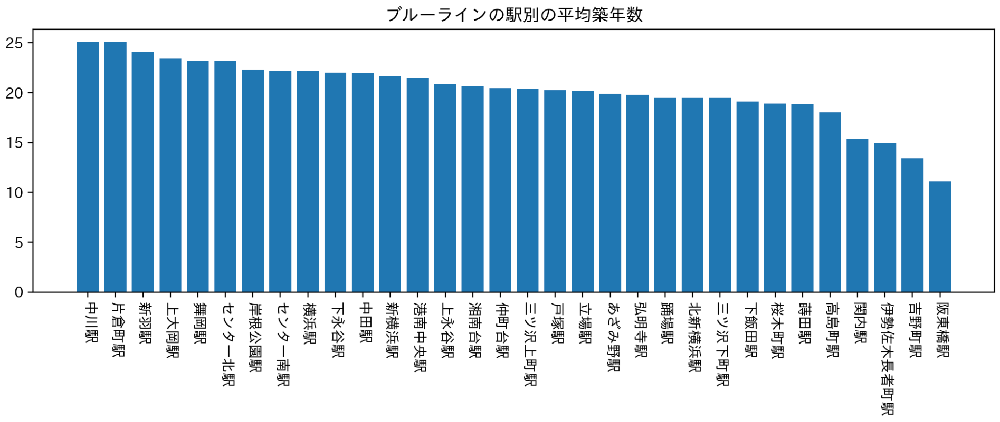
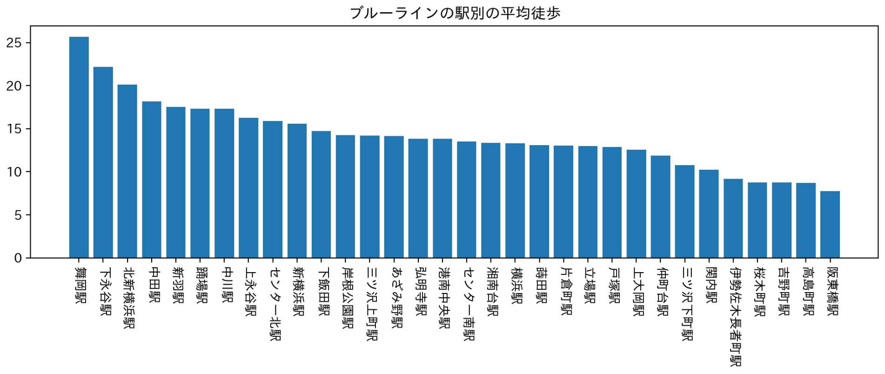

私たちの班では神大生の中でも女性におすすめしたい駅を調べることにしました
女性におすすめする駅では次のポイントを重視しました
・セキュリティの観点から築年数が浅い
・遅い時間に歩くと危ないので駅までの距離が近い
また、駅を絞るために路線を次の三つに絞り、それぞれ2駅ずつあげることにしました
1.京急線
2.東急東横線
3.ブルーライン
1.京急線
築年数を見てみると黄金町駅、日ノ出町駅が浅いですが、平均徒歩を見てみると京急東神奈川駅、日ノ出町駅が少ないことが分かります。 京急東神奈川駅は平均築年数では真ん中くらいなので今回は除外、黄金町駅は平均徒歩では五番目にランクインしていて上位であると言えるので、京急線では『日ノ出町駅』、『黄金町駅』の二つをおすすめします。
2.東急東横線
築年数を見てみると横浜駅、反町駅が浅いですが、平均徒歩を見てみると新丸子駅、東白楽駅が少ないことが分かります。 横浜駅は平均徒歩では5番目と上位ではありますがそれよりも上位に反町駅があるので今回は除外、新丸子駅は平均築年数では5番目にランクインしていますがそれよりも上位に東白楽駅があるので除外します。東急東横線では『反町駅』、『東白楽駅』の二つをおすすめします。
3.ブルーライン
 築年数を見てみると阪東橋駅、吉野町駅が浅いですが、平均徒歩を見てみると阪東橋駅、高島町駅が少ないことが分かります。 阪東橋駅はどちらも一位、吉野町駅は平均徒歩では3番目、高島町駅は平均築年数では5番目となっています。ですので、ブルーラインでは『阪東橋駅』、『吉野町駅』の二つをおすすめします。
1.京急線 → 日ノ出町駅・黄金町駅
2.東急東横線 → 反町駅・東白楽駅
3.ブルーライン → 阪東橋駅・吉野町駅
今回の分析では以上の駅を女性の神大生におすすめします。